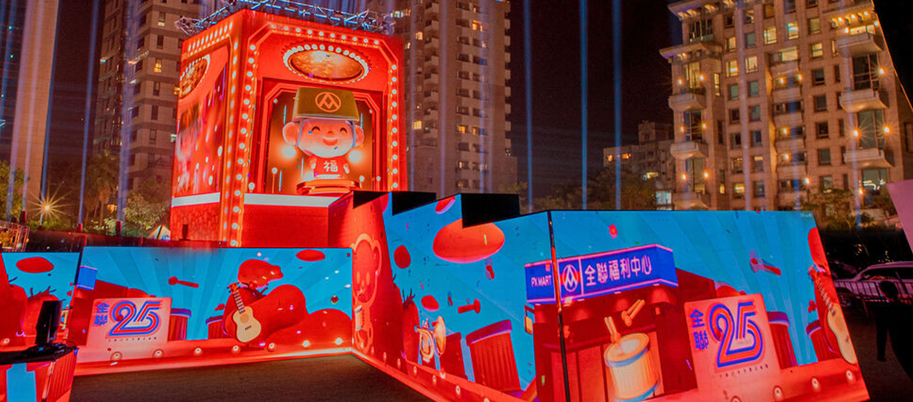

Taipei Lantern Festival: Key to the Maze (光鑰未來) is a massive LED maze installation that combined seasonal themes with AI data-driven visuals. The experience transformed a public space into a rhythmic, glowing journey through light and data.
I served as Artist and Director for the opening sequence of the installation. My responsibilities included designing the visual rhythm, coordinating the transition from the intro to the active maze state, and ensuring the seasonal narrative was captured through high-impact motion graphics.

The challenge was to maintain clarity and impact across a large-scale, non-standard display surface. We focused on bold geometric patterns and vibrant color shifts that could be felt from a distance, while Providing intricate details for visitors walking through the maze.
Role: Artist, Director (Opening Sequence)
Type: Public Light Installation / LED Maze
Year: 2023
Studio: Moonshine Studio
Tools & Tech: Adobe Creative Suite, Unity Engine, LED Display Systems
{kind=link}